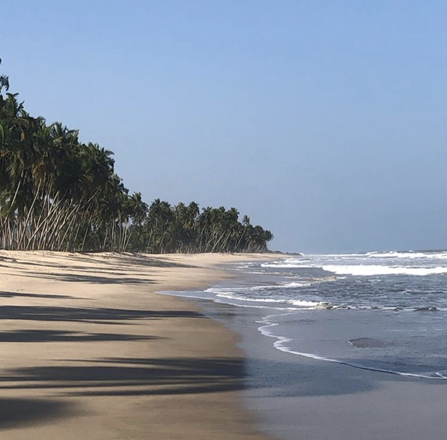
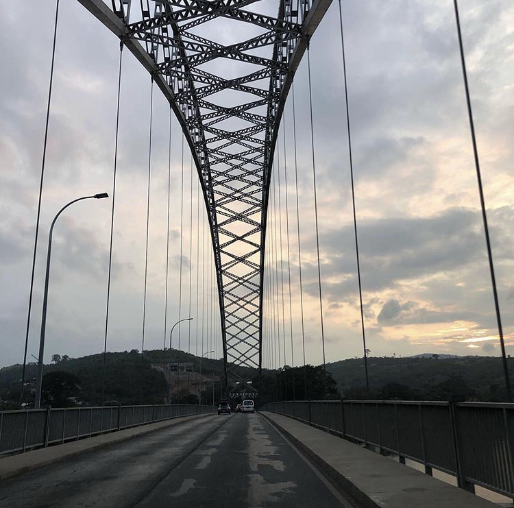

Personal-Interests
Photography

Mankessim, Central Region, Ghana

Akosombo Bridge, Volta, Ghana
Guitar
I love to play the guitar, and more specifically songs by Green Day. My favourite songs to play are "Boulevard of Broken Dreams" and "Wake me Up when September Ends". When not playing existing songs, I like to relax by playing random riffs, or just about anything that sounds good.
I don't have any recordings, so sorry there is nothing for you to see here. :(
Miscellaneous
I am also an amateur Philatelist and an amateur Numismatician. I have coins and stamps from over 50 countries and territories (both existing and defunct). I find this to be a dying hobby and would love to meet more people that like to collect coins and stamps from around the world.